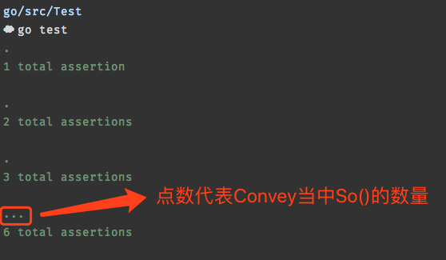
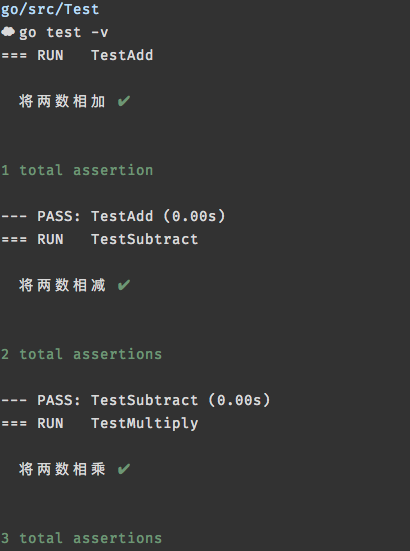
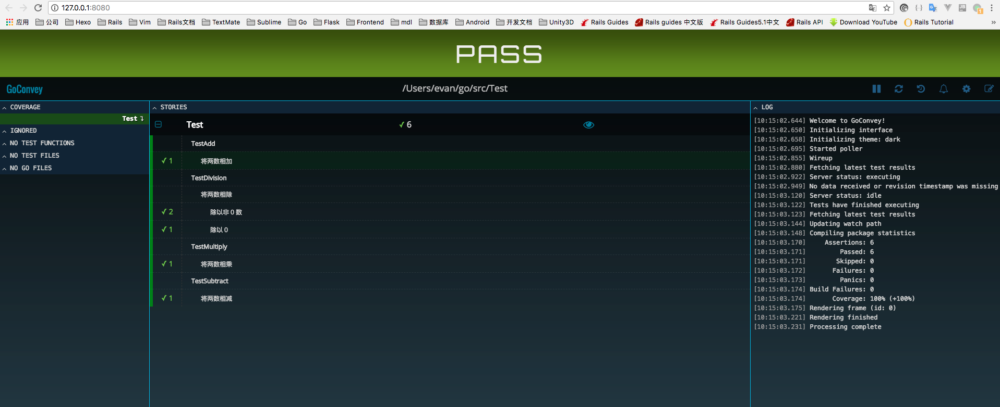

注:无闻大师的系列视频
Goconvey官方文档
主要特性
1.测试代码优雅,简介
2.集成原生测试
3.全自动编译测试
4.详细展示测试结果及覆盖率
5.高可读的命令行输出结果
6.半自动化书写测试用例
Install
1 | go get github.com/smartystreets/goconvey |
示例代码:
main.go1
2
3
4
5
6
7
8
9
10
11
12
13
14
15
16
17
18
19
20
21
22
23
24package main
import (
"errors"
)
func Add(a, b int) int {
return a + b
}
func Subtract(a, b int) int {
return a - b
}
func Multiply(a, b int) int {
return a * b
}
func Division(a, b int) (int, error) {
if b == 0 {
return 0, errors.New("被除数不能为 0")
}
return a / b, nil
}
Convey && So
So进行断言操作
main_test.go1
2
3
4
5
6
7
8
9
10
11
12
13
14
15
16
17
18
19
20
21
22
23
24
25
26
27
28
29
30
31
32
33
34
35
36
37
38
39
40
41package main
import (
"testing"
. "github.com/smartystreets/goconvey/convey"
)
func TestAdd(t *testing.T) {
Convey("将两数相加", t, func() {
So(Add(1, 2), ShouldEqual, 3)
})
}
func TestSubtract(t *testing.T) {
Convey("将两数相减", t, func() {
So(Subtract(1, 2), ShouldEqual, -1)
})
}
func TestMultiply(t *testing.T) {
Convey("将两数相乘", t, func() {
So(Multiply(3, 2), ShouldEqual, 6)
})
}
func TestDivision(t *testing.T) {
Convey("将两数相除", t, func() {
Convey("除以非 0 数", func() {
num, err := Division(10, 2)
So(err, ShouldBeNil)
So(num, ShouldEqual, 5)
})
Convey("除以 0", func() {
_, err := Division(10, 0)
So(err, ShouldNotBeNil)
})
})
}
Assertions 断言
General Equality
1 | So(thing1, ShouldEqual, thing2) |
Numeric 数字判断
1 | So(1, ShouldBeGreaterThan, 0) |
Collections 集合判断
1 | So([]int{2, 4, 6}, ShouldContain, 4) |
Strings 字符串判断
1 | So("asdf", ShouldStartWith, "as") |
panic 判断
1 | So(func(), ShouldPanic) |
Type checking 类型判断
1 | So(1, ShouldHaveSameTypeAs, 0) |
time.Time (and time.Duration)
1 | So(time.Now(), ShouldHappenBefore, time.Now()) |
实际测试
go test
使用原生的go test 进行测试1
go test
1
go test -v #查看详细的test内容

goconvey
goconvey依赖于官方tool的cover,如果没有的话请自行安装1
go get -u golang.org/x/tools/cmd/cover
执行:1
goconvey
然后就可以使用本地:8080端口查看测试结果

Goconvey 测试gin 路由
举个例子:
main.go1
2
3
4
5
6
7
8func main(){
r := gin.New()
r.GET("/", homePage)
r.Run()
}
func homePage(c *gin.Context){
c.JSON(200,gin.H{"message":"homepage"})
}
main_test.go1
2
3
4
5
6
7func TestHomePage(t *testing.T){
w := httptest.NewRecorder()
req := httptest.NewRequest("GET", "/", nil)
test_mux := gin.New()
test_mux.ServeHTTP(w, req)
So(w.Code, ShouldEqual, http.StatusOK)
}